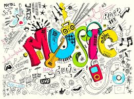

La musica en la actualidad
Más allá de explicaciones formales, concebimos a la música como una expresión sonora de la espiritualidad humana que desde la prehistoria hasta nuestros días se ha hecho presente en la ruta vital y lúdica de todos los pueblos del mundo. La música entonces, es la evidencia ancestral de la inteligencia humana y su vocación creadora.
Desde tiempos inmemoriales, con ritmos, melodías, armonías, sonidos y silencios, el ser humano ha expresado sus temores, sus emociones, anhelos, inquietudes y preocupaciones; también sus alegrías y tristezas. En otros casos, el arte musical expresa la nostalgia o el coraje, e incluso, la milenaria aspiración por construir un mundo mejor.
En fin, la música se ha hecho absolutamente necesaria porque no todo se ha podido expresar con la palabra. Por ello se recurrió a la magia de los sonidos; el arte más universal y más generoso.

Dentro de los generos mas populares encontramos :
pop y la musica :Electronica